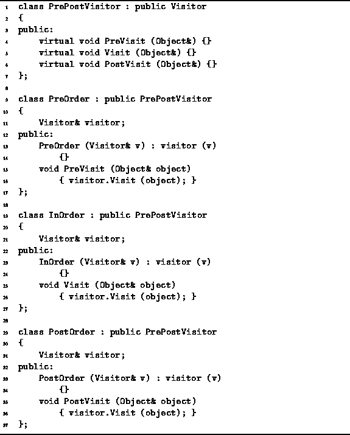

Data Structures and Algorithms
with Object-Oriented Design Patterns in C++
Data Structures and Algorithms
with Object-Oriented Design Patterns in C++Preorder, inorder and postorder traversals are special cases of the more general depth-first traversal described in the preceding section. Rather than implement each of these traversals directly, we make use a design pattern pattern, called adapter , which allows the single routine to provide all the needed functionality.
Suppose we have an instance of the PuttingVisitor class
(see Section  ).
As shown in Program ,
the PuttingVisitor class is derived from the abstract Visitor
base class and it provides a Visit
routine that prints every object it visits.
However, we cannot pass a PuttingVisitor instance
to the DepthFirstTraversal routine shown in Program
because it expects a PrePostVisitor instance.
).
As shown in Program ,
the PuttingVisitor class is derived from the abstract Visitor
base class and it provides a Visit
routine that prints every object it visits.
However, we cannot pass a PuttingVisitor instance
to the DepthFirstTraversal routine shown in Program
because it expects a PrePostVisitor instance.
The problem is that the interface provided by the PuttingVisitor does not match the interface expected by the DepthFirstTraversal routine. The solution to this problem is to use an adapter. An adapter converts the interface provided by one class to the interface required by another. For example, if we want a preorder traversal, then the call to the PreVisit (made by DepthFirstTraversal) should be mapped to the Visit member function (provided by the PuttingVisitor). Similarly, a postorder traversal is obtained by mapping PostVisit to Visit.

Program: PrePostVisitor, PreOrder, InOrder and PostOrder Class Definitions
Program defines three adapter classes--PreOrder, PostOrder and InOrder.
All three classes are similar:
They are all derived from the Visitor abstract base class;
all have a single member variable that is a reference to a Visitor
class instance; and
all have a constructor that takes a Visitor reference
and initializes the member variable.
Each class provides a different interface mapping. For example, the PreVisit member function of the PreVisit simply calls the Visit function on the visitor member variable. Notice that the adapter provides no functionality of its own--it simply forwards member function calls to the visitor instance as required.
The following code fragment illustrates how these adapters are used:
PuttingVisitor v; SomeTree t; t.DepthFirstTraversal (PreOrder (v)); t.DepthFirstTraversal (InOrder (v)); t.DepthFirstTraversal (PostOrder (v));
 Copyright © 1997 by Bruno R. Preiss, P.Eng. All rights reserved.
Copyright © 1997 by Bruno R. Preiss, P.Eng. All rights reserved.